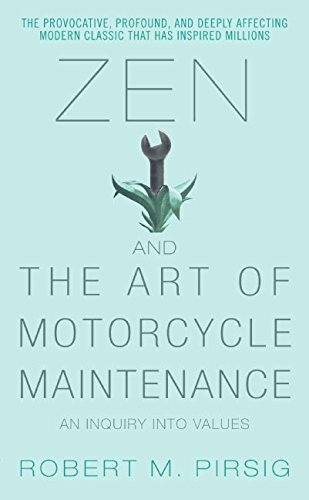

2022 Books review
List of books

Zen and the art of motorcycle maintenance
About traveling
- On a cycle the frame is gone. You're completely in contact with it all. You're in the scene, not just watching it anymore, and the sense of presence is overwhelming.
- We're in such a hurry most of the time we never get much chance to talk. The result is a kind of endless day-to-day shallowness, a monotony that leaves a person wondering years later where all the time went and sorry that it's all gone.
- We have been on so many trips together we know from a glance how one another feels. Right now we are just quiet and looking around.
Disharmony
- One diy other hire others to do.
- when you discover something like that it's like discovering a tooth with a missing filling. You can never leave it alone.
- Goodness for him has other sources which he values as much as or more than social practicality.
- Blind alley, though. If somone's ungrateful and you tell him he's ungrateful, okay, you've called him a name. You haven't solved anything.
- I was going at it in terms of underlying form. He was going at it in terms of immediate appearance. I was seeing what the shim meant. He was seeing what the shim was.
Modern ghosts
- Those Indians and medieval men were just as intelligent as we are, but the context in which they thought was completely different. Within that context of thought, ghosts and spirits are quite as real as atoms, particles, photons and quants are to a modern man. In that sense I believe in ghosts. Modern man has his ghosts and spirits too, you know.”
Items to take on bike trip
- Unlined leather gloves are best because they prevent sunburn, absorb sweat and keep your hands cool. When you're going for an hour or two little things like this aren't important, but when you're going all day long day after day they become plenty important.
- They have become filled with oil and sweat and dirt and spattered bugs and now when I set them down flat on a table, even when they are not cold, they won't stay flat. They've got a memory of their own.
- That is impractical, but practicality isn't the whole thing with gloves or with anything else.
Real object of motorcycle maintenance
- is this personality that is the real object of motorcycle maintenance.
Classic and romantic
- Classical underlying form. Essence.
- Romantic immediate aparece. Surface.
- and this is their classical beauty…not what you see, but what they mean…
- He thinks I'm working on parts.I‘m working on concepts.
- Quality can be split in classic/romantic.
- Classical beauty, sense of harmony of the cosmos that guides our decisions such that we contribute to this harmony.
When analytic thought is applied something is killed
And instead of just dwelling on what is killed it's important also to see what's created and to see the process as a kind of death-birth continuity that is neither good nor bad, but just is.
Intelligence and loneliness
- No one really knew him. That is evidently the way he wanted it, and that's the way it was. Perhaps his aloneness was the result of his intelligence. Perhaps it was the cause. But the two were always together. An uncanny solitary intelligence.
Rationality
- A motorcycle functions entirely in accordance with the laws of reason, and a study of the art of motorcycle maintenance is really a miniature study of the art of rationality itself.
Functional description and system structure
- Describe a system by a chain of causal relations.
- A chain is a structure.
- Government is a system in this sense.
- But to tear down a factory or to revolt against a government or to avoid repair of a motorcycle because it is a system is to attack effects rather than causes; and as long as the attack is upon effects only, no change is possible.
- If a revolution destroys a systematic government, but the systematic patterns of thought that produced that government are left intact, then those patterns will repeat themselves in the succeeding government.
Scientific method
- In scientific work and electronics technology this is necessary because otherwise the problems get so complex you get lost in them and confused and forget what you know and what you don't know and have to give up.
- An experiment is a failure only when it also fails adequately to test the hypothesis in question, when the data it produces don't prove anything one way or another.
Scientifically produced antiscience
Hume
- empiricist, all thought derive from senses.
- “Nature” and “Nature's laws” are creations of our own imagination. To deny that is to deny empiricism.
- Critique of Pure Reason, critiques this idea and saves scientific empiricism from its own devouring logic.
Kant
- To follow Kant one must also understand something about the Scottish philosopher David Hume.
- all knowledge begins with experience it doesn't follow that it arises out of experience.
- A priori, there are aspects of reality which are not supplied immediately by the senses.
- We sense objects in a certain way because of our application of a priori intuitions
- reality is a continuous synthesis of elements from a fixed hierarchy of a priori concepts and the ever changing data of the senses.
- Critique of Pure Reason is concerned with how this a priori knowledge is acquired and how it is employed.
Oriental philosophy
- In all of the Oriental religions great value is placed on the Sanskrit doctrine of Tat tvam asi, “Thou art that,” which asserts that everything you think you are and everything you think you perceive are undivided. To realize fully this lack of division is to become enlightened.
- Hegel was the bridge between Western and Oriental philosophy.
Knowledge church and university
- The real University, he said, has no specific location. It owns no property, pays no salaries and receives no material dues. The real University is a state of mind.
- The real University is nothing less than the continuing body of reason itself.
Machine test
- The test of the machine is the satisfaction it gives you. There isn't any other test. If the machine produces tranquillity it's right. If it disturbs you it's wrong until either the machine or your mind is changed. The test of the machine's always your own mind. There isn't any other test.”
Newton way of thinking analogy
- So what Newton did was say, in effect, ‘We're going to presume there's such a thing as instantaneous change, and see if we can find ways of determining what it is in various applications.'
- Newton invented a new form of reason.
Analogy and learning
- I've heard it said that the only real learning results from hang-ups, where instead of expanding the branches of what you already know, you have to stop and drift laterally for a while until you come across something that allows you to expand the roots of what you already know
Journey and end goal
- To live only for some future goal is shallow. It's the sides of the mountain which sustain life, not the top. Here's where things grow. But of course, without the top you can't have any sides. It's the top that defines the sides.
- Any effort that has self-glorification as its final endpoint is bound to end in disaster.
Via negativa Definition of quality
- Since the world obviously doesn't function normally when Quality is subtracted, Quality exists, whether it's defined or not.
- Hold Quality undefined. That was the secret.
- The “object” is an intellectual construct deduced from the qualities.
- Qualities define an object not the other way. Locke's statement that no object, scientific or otherwise, is knowable except in terms of its qualities.
- “Quality is what you like,”
Logic of argument
- It's an old rule of logic that the competence of a speaker has no relevance to the truth of what he says,
Why quality is not just what you liked?
- Something different than superficial immediate appeal.
- Quality is not objective, it is not in the material world.
- Quality is no subjective, it is not only on the mind.
- It is independent of mind/matter.
- Quality is an event when the subject becomes aware of the object.
Quality as an event not a thing
- Without object there can be no subject.
- The object creates awareness of the subject.
- Quality event is the cause of object and subject, not the opposite.
Analytic process
- Breakdown into subject and predicate
Analogies for quality
- Quality is the response of an organism to it's environment.
Tao, Buddha and quality
Poincaré and mathematical truth
- Geometric axioms as synthetic a priori judgement (Kant). They exist without man's experience. Poincaré didn't believe so. Because non euclidian geometry exists.
- Geometric axioms as experimental thing? No, because they would be subjected to laboratory variation.
- Geometric axioms are conventions. Choose among others with the constraint of avoiding contradiction. They are a definition.
- There is no single true, just convenience.
- "The burden of sustaining the order of the universe rests on facts".
Facts and via negativa learning
- Begin with facts until a rule is established.
- After a while, facts in conformity with the rule become dull and don't teach us anything.
- Then, the execution become Important.
- "We seek not resemblance, but differences."
Subliminal self and preintelectual awareness
- Subliminal self, by Poincaré. Only a few break into consciousness by a subliminal process.
- The selection is based on aesthetics.
Surfaces and essence
- Good and bad mechanic is the ability to narrow a selection of facts based on quality.
- Narrowing from the collection to the essence.
Objective insistence
- There is always an object and a subject.
- When this paradigma is used, it shuts the quality.
Been stuck and
- Stuckness is the predecessor of all real understanding.
- Asking functional questions, you are not interested in the "what is" but "what it does". Associated with the question is a "subliminal quality discrimination".
Return of the fishmen and real universe awareness
- Someone that connects with quality is filled with "gumptuon". Greeks called this enthusiasm.
- It is the "psychics gasoline" that keeps things going.
- Enthusiasm is something that can increase with perseption of quality.
PhD and fishing
- If you know which facts you are fishing for you are not fishing. You already cought them.
Ego and internal trap
- Elevated ego means you have a high evaluation of yourself, this prevents you from recognizing new facts.
- The ego is a Buble that separetes you from the quality reality.
Definition by analogy
- Definition is made up of what you know. It's an analogue to what you already know.
- Quality directs the analogy building pattern.
Description of a hero
Thus the hero of the Odyssey is a great fighter, a wily schemer, a ready speaker, a man of stout heart and broad wisdom who knows that he must endure without too much complaining what the gods send; and he can both build and sail a boat, drive a furrow as straight as anyone, beat a young braggart at throwing the discus, challenge the Pheacian youthat boxing, wrestling or running; flay, skin, cut up and cook an ox, and be moved to tears by a song. He is in fact an excellent all-rounder; he has surpassing areté.